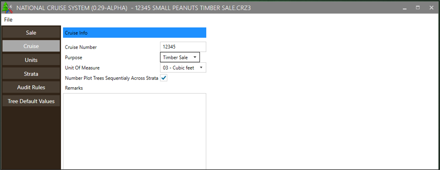
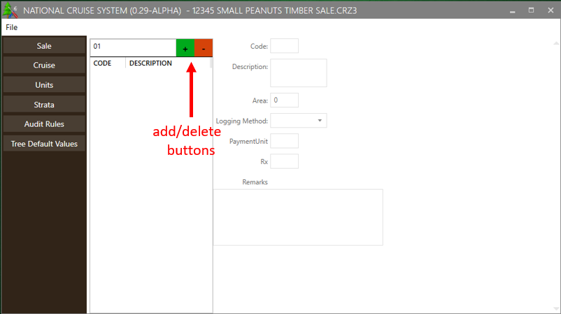

U.S. Forest Service
Washington Office
Forest Management Service Center
Fort Collins, CO
Updated July 2021
This document is currently a work in progress and may be changed frequently.
The U.S. Department of Agriculture (USDA) prohibits discrimination in all its programs and activities on the basis of race, color, national origin, sex, religion, age, disability, political beliefs, sexual orientation, or marital or family status. (Not all prohibited bases apply to all programs.) Persons with disabilities who require alternative means for communication of program information (Braille, large print, audiotape, etc.) should contact USDA’s TARGET Center at (202) 720-2600 (voice and TDD).
To file a complaint of discrimination, write USDA, Director, Office of Civil Rights, Room 326- W, Whitten Building, 1400 Independence Avenue, SW, Washington, DC 20250-9410 or call (202) 720-5964 (voice or TDD). USDA is an equal opportunity provider and employer.
APPENDIX A: CRUISE DESIGN FORMS 15
NatCruise Interim is part of the third generation of software for the U.S. Forest Service’s National Cruise System. It is used to establish new sales, customize data entry forms, and modify cruise designs. It is designed to work with the latest versions of Cruise Processing and Cruise Design. NatCruise Interim serves as an intermediate desktop software solution while a server-based cruise management system is developed (anticipated release in fall 2023).
NatCruise Interim currently supports the cruise methods outlined in the Timber Cruising Handbook (FSH 2409.12), including 100 percent cruise, fixed plot, fixed count-measure, point sampling, point count-measure, sample tree, 3P, fixed plot-3P, point-3P, 3P-point, and fixed plot-count.
This document is a work in progress and may be changed frequently.
Installation files for NatCruise Interim can be obtained from the Forest Management Service Center personnel while in testing. Following production release installation files will be available on the Software Center for Forest Service users, or from the Forest Management Service Center website for others. The default directory for all cruise files and template files is C:/users/<username>/Documents/CruiseFiles.
The opening screen for NatCruise Interim contains only a File menu with four options: New Cruise, Open File, Open Recent, and Exit. Version information is found at the top of the window (Figure 1).
Figure 1-NatCruise Interim Opening Screen
Once a cruise file is created or an existing cruise file is opened, the best way to fill out information is to move from top to bottom down the left hand menu and from left to right within nested menus (Figure 2).
Figure 2 – nested menus within NatCruise Interim
There is no Save option in the File menu because changes are automatically saved whenever you check a box or click into a new textbox. If the program crashes all changes prior to that point will be retained.
The New Cruise button will launch a Create New Cruise window (Figure 3).
Figure 3-Cruise File Creation Prompt
The first step in establishing a new cruise is to define the cruise information. At the top of this form, you will be asked to select a Template by using the Browse button. The default location for Template files installed with V2 software is C:/users/<username>/Documents/CruiseFiles/Templates/. Template files can also be downloaded from the FMSC website as a ZIP file. Template files can be edited in Cruise Manager (part of the version 2 software suite). Although selecting a Template file is optional, it contains establishment and design information you will have to enter manually if you do not select one.
Once a template has been selected:
enter the Sale Name and Number (usually 5 digits)
Select Region and Forest from the pull down lists. District number (2 digits) will need to be typed.
Select Purpose from the pull-down list (usually Timber Sale or Recon).
UOM is the default Unit of Measure for the sale. This value will be used as the default whenever UOM needs to be entered. If you are using FIXCNT method with other cruising methods, you can change the UOM to 04 for those FIXCNT populations.
The checkbox labeled Number Plot Trees Sequentially Across Strata will determine how tree numbers auto populate within plots (1 through n for each stratum vs 1 through n for the plot as a whole).
Note that all information entered in this screen can be edited later, except for the Template file applied. Once all the information has been entered, click on the Save As button, navigate to your desired save location, edit the file name if desired, and press Save to move on to subsequent setup steps. Unlike in V2, there is not currently an option to create a sale folder; this will need to be done manually if desired.
From this point onwards, the interface does not differ between new sale entry and editing an existing file.
The Sale screen shows the Sale Name, Sale Number (usually 5 digits), Region, Forest, and District (2 digits) in editable fields. As in initial setup, Region and Forest are drop-down menus, while the other fields are typed into.
Figure 4-Sale level information
The Cruise screen shows the Cruise Number, Purpose, Unit of Measure, and a Remarks field along with an option to number plot trees sequentially across strata. If purpose is set to Timber Sale the cruise number defaults to the Sale Number. If a different purpose is selected a code indicating the purpose of the cruise will be appended to the end of the sale number. If the box for numbering plot trees sequentially is checked, all trees on a plot will be numbered sequentially in the order they are entered into FSCruiser regardless of strata.
This screen was added to NatCruise Interim in anticipation of a future release which will allow for multiple cruises (e.g. Recon, Timber Sale, and Check Cruise) to be stored within one Sale-level file.

Figure 5 – Cruise level information
The next step is to enter the Unit-level information. To begin, enter an alphanumeric unit code into the box in the top left next to the green plus sign. Press the green plus sign to add the unit to the file; to delete a unit, highlight it in the menu on the left and press the red minus button (Figure 6).

Figure 6- Unit Information/add a unit
Each unit requires a Description and Area (in acres). In addition, Logging Method, Payment Unit, Prescription (Rx), and Remarks can be entered. These fields will all display in the cruise output, but only Area, Logging Method, and Payment Unit will be imported into TIM.
In NatCruise Interim Strata, Sample Groups, and Sampling Frequency are all set up using the submenus within the Strata page. Complete data can be entered one stratum at a time (recommended), or each submenu can be completed for all strata at once.
To create a new stratum enter a code in the textbox on the left. Optionally, you can apply a Stratum Template by selecting one from the dropdown menu before pressing the green plus sign (Figure 7). If a template is not selected, the cruise method can be set manually. For plot-based cruise methods a field will appear for basal area factor (BAF) or fixed plot size (FPS). Fixed plot size is entered as the inverse of the plot size (e.g. for 1/20th acre plots FPS is 20). The selected template will set up a default list of fields, which can then be modified (see Fields).
Figure 7 – Stratum Details and Templates
Fields can be selected manually, or you can start from a template (see Design Templates). A Default Value can be assigned to each field, and the field can be either locked or hidden. To rearrange the fields select one from the list and use the Move Up and Move Down buttons (Figure 8). Changes are applied to the Stratum highlighted on the left.
Figure 8 – Fields Setup
Select the desired Stratum from the list on the left and check the boxes for the corresponding Cutting Units. All units can be selected by using the Select All button, and all selections can be cleared by using the Clear All button (Figure 9).
Figure 9 – Stratum Cutting Units setup
You will establish sample groups, frequencies (if applicable), and subpopulations (species lists) through the two submenus within Sample Groups.
Sample Group Details is where you will enter the sample group Code that will be displayed on the tally/plot page in FS Cruiser V3. Code and Primary Product are required fields. In addition, a Description, Secondary Product, Biomass Product, Cut/Leave designation, and Live/Dead Default can be set. If no choices are made, the program will default to Cut and Live (Figure 10). If the sample method selected involves frequency sampling, related field entry will be available (frequency, insurance frequency, sample selector type, big BAF, KZ, etc. depending on cruise method).
Figure 10 – Sample Group Details page
There is a checkbox in this menu for Tally by Species. If checked, trees will be tallied at the Species Level. If left unchecked, trees will be tallied at the Sample Group level.
Use this menu to assign species to the selected Sample Group. Species codes can be selected from the drop down, or a new code can be typed in. Press the green plus button to add the species to the list. Once a species code is added, the Live/Dead field can be changed. Adding a duplicate of an existing species code will create a copy with the opposite Live/Dead default (Figure 11). The program will not allow more than two replicates of the same species code.
Figure 11 – Subpopulations setup
The Species menu shows species codes present in the Template File, as well as any additional species codes entered into the cruise setup. Each species code can be assigned a Contract Species and FIA code (Figure 12). The FIA code links the species to volume equations within Cruise Processing, although this can also be done manually if the field is left blank.
Figure 12 – Species Setup
Audit rules can be used to test entered tree data. If data violates the Audit Rules a warning will be generated within FS Cruiser V3 as well as within the Cruise Processing program. Errors triggered by audit rules can be suppressed to enable processing, so audit rules like minimum heights can be used even if they may be violated on rare occasions.
To create an audit rule, establish the rule on the left hand side of the screen in the Add Audit Rule area. Choose a Tree Field, and minimum and/or maximum allowed value. A description can also be added for clarity (Figure13).
Figure 13 – Audit Rule Setup
To apply the audit rule to a Species, Product, and Live/Dead combination, highlight the rule on the left and use the drop down menu on the right in the Add Population To Audit Rule area. Note that ‘Any’ is an option for all three dropdowns. In the event that audit rules conflict with one another, the most specific rule will take precedence (for example, if a rule limits DBH for Sawtimber of Any species to 12.0 inches or greater but another rule limits DBH for Ponderosa Pine Sawtimber to 10.0 – 99.9 inches, a value of 11.0 inches will not produce an error).
To delete an Audit Rule or to delete a Population from an audit rule, highlight the desired line and press the appropriate Delete button at the bottom of the screen.
The Tree Defaults table displays a list of species code/product combinations present in the Template File, as well as any additional species codes entered into the cruise setup. Many default values can be set for each species. Primary Product Cull, Primary Product Hidden Defect, and Tree Grade can be assigned different default values for Live and Dead trees using the same species code (Figure 14). If you wish to have multiple Hidden Primary Defect percent for the same Species, Primary Product, and Live/Dead combination, you will have to create a new record with a different Species code to distinguish it from the original code. This list can be edited, new records can be added, and existing records can be deleted.
Figure 14 – Tree Default Values setup
Templates for each cruise method can be edited or new templates can be created using the Design Templates menu.
A default Code, Yield Component, and Basal Area Factor or Fixed Plot Size can be set for each cruise method. To create a new template, type the code into the box on the left and hit the green “+” button (Figure 15).
Figure 15 – Stratum Template setup
Default fields can be established for each Template, as well as assigning default values and either locking or hiding each one. Highlight the desired template on the left to edit the associated fields. Fields can be added and removed using the green “+” or the red “-“ buttons (Figure 16).
Figure 16 – Tree Fields setup
In the current version of NatCruise Interim, Template Files from Version 2 of the National Cruise software suite are used in setup. These .cut files contain information that will be used to fill in default values in new cruises, including species information and field setup settings.
The information in Template Files can be edited directly using Cruise Manager (available in the Forest Service Software Center or from the Forest Management Service Center website). To edit a Template File, Click on the Open File button. In the Open File dialog box, use the pull down list at the bottom for Files of type: and select Cruise Template File (*.cut). By default, Template Files will be stored in My Documents/Cruise Files/Template Files. Select a Template File and click Open. The Template Editor allows the user to setup and edit Template data (Figure 17).
Figure 17-Template Editor in Cruise Manager
Fill out these forms for each new cruise being established, and keep an updated copy in the presale folder.
Cruise Designer Name:
Date:
Path and Name of Template File Used:
| Sale Number | Sale Name | Purpose | Default UOM | Region | Forest | District Code | Log Grading? |
|---|---|---|---|---|---|---|---|
|
|
|
|
|
|---|---|---|---|---|
(Fill out a copy of this page for each stratum.)
Code: _______ Cruise Method: ________ Description: ________________________________________________________
Month: _______ Year: ________ Yield Component: ______ BAF: ________ FP Size: ________ 3PPNT KZ: _______
List Cutting Units:
Sample Groups in Stratum
| SG Code | Prim Prod | Sec Prod | Default LD | Samp Freq | Ins Freq | Big BAF* | KZ | Min KPI | Max KPI | Descrip | Tally by** | System-atic? | Tree Defaults (Sp/PProd/LD) |
|---|---|---|---|---|---|---|---|---|---|---|---|---|---|
Tree Field Setup Tally Setup – Stratum Hot Key:
|
Heading |
|
|
|
|
|
|---|---|---|---|---|---|---|
* or Small FP size for FCM
** Sample Group, Species or Don’t Tally
| Sp Code | Primary Prod | LD | FIA Code | Cull P | Hidden P | Cull S | Hidden S | % Rec | Grade | Form Class | Contr Sp | Merch Ht LL | Merch Ht Type | BTR | AvgZ | RefHtPer |
|---|---|---|---|---|---|---|---|---|---|---|---|---|---|---|---|---|
| Field | Min | Max | Tree Defaults (Sp/PProd/LD) |
|---|---|---|---|